El tema central del presente capítulo será la construcción de un
espacio topológico a partir de otro dado. Este procedimiento ya se
ha usado antes, por ejemplo cuando se definió la topología del
subespacio, pero ahora lo queremos hacer de una nueva forma usando
el concepto de relación de equivalencia.
4.1 Función cociente
Cierto tipo de funciones surgen con el
concepto de espacio cociente; estas vienen a
tomar el rol que jugaron las inclusiones con
la topología del subespacio, así como las
proyecciones cuando se introdujo la topología producto.
Sean $X,Y$ espacios topológicos y $f:X\ra Y$ función.
Decimos que $f$ es una función cociente si cumple:
$f$ es sobreyectiva
$f$ es continua
Los abiertos $U\subset Y$ son aquellos tales que $f^{-1}(U)\subset X$ son abiertos.
Es decir, $f$ es función cociente si es continua, sobreyectiva y
$U\subseteq Y$ es abierto, sí y sólo sí, $f^{-1}(U)\subseteq X$ es abierto;
así, ser función cociente es más fuerte que ser continua.
En general, una función cociente no es una función abierta pero si
lleva ciertos abiertos de $X$ en abiertos de $Y$: decimos que
$A\subseteq X$ es saturado respecto a una función cociente $f$
si
$$
A=f^{-1}(B)=\bigcup_{y\in B} f^{-1}(y),
$$
para cierto $B\subseteq Y$.
Es decir, un subconjunto $A$ es saturado si es la unión de las fibras $f^{-1}(y)$
de algún subconjunto de $Y$. En general, la saturación de $A\subseteq X$
es la unión $f^{-1}\circ f(A)=\bigcup_{y\in f(A)}f^{-1}(y)$ de todas las fibras que
intersectan a $A$. De aquí, $A$ saturado $\sss\; A=f^{-1}\circ f(A)$.
Por lo anterior, una función cociente es aquella función continua que
lleva subconjuntos saturados abiertos de $X$ en abiertos de $Y$ (o saturados
cerrados en cerrados de $Y$); véase Møller,
Proposición 2.77.
Dos tipos de funciones cociente resultarán de importancia en lo que sigue: una función
cociente es abierta (resp. cerrada) si es función abierta (resp.
cerrada).
Lema:
Sea $f:X\ra Y$ función continua y sobreyectiva.
Si $f$ es abierta (resp. cerrada), es una función cociente abierta (resp. cerrada).
$\dem$ Resta ver que $f$ satisface la tercera propiedad en la definición de función
cociente. Como $f$ es sobreyectiva, para $A\subset Y$ se tiene $f\circ f^{-1}(A)=A$.
Así, si $f$ es abierta y $A\subset Y$ cumple que $f^{-1}(A)$ es abierto se sigue
que $f(f^{-1}(A))=A$ es abierto, lo cual indica que $f$ es función cociente.
De igual manera si $f$ es cerrada.$\findem$
Cabe mencionar que existen funciones cocientes que no son ni
abiertas ni cerradas, como ilustra el siguiente ejemplo.
Ejemplos:
Tomemos $X=[0,1]\cup [2,3], Y=[0,2]$ y definamos $f:X\ra Y$ mediante
$$
f(x)=\begin{cases}x,&x\in [0,1]\\x-1,& x\in [2,3] \end{cases}
$$
Notemos que $f$ es continua, sobreyectiva y cerrada y por lo tanto una función cociente. Por otro
lado, notemos que el abierto $[0,1]\subset X$ no tiene imagen abierta en $Y$; asi que $f$ no es
abierta.
Sabemos que la proyección $\br\times \br\ra \br$ en la primera
coordenada es una función continua,
sobreyectiva y abierta; así, es una función cociente. Por otro
lado, sabemos que el subconjunto
$$
C=\{(x,y)\in \br^2 \barra xy=1 \}
$$
es cerrado pero su imagen, dada por $=\br\baca \{0\}$, no es un
cerrado de $\br$.
Consideremos
$$
f:[0,2\pi]\lra S^1, \qquad t\longmapsto (\cos t, \sin t)
$$
y notemos que es sobreyectiva y continua. Como su dominio es compacto y
su contradominio es Hausdorff,
la función es cerrada. De aquí que $f$ es función cociente cerrada.
Finalmente notemos que no es
abierta pues el abierto $[0,1)$ no tiene imagen abierta en $S^1$.
Para $f:X\ra Y$ función cociente se tienen las siguientes
propiedades directamente de la definición:
La función identidad $1:X\ra X$ es función cociente.
Si $g:Y\ra Z$ es función cociente, $g\circ f$ también lo es.
Si $h:Y\ra Z$ es función continua, y $h\circ f:X\ra Z$
es función cociente entonces $h$ es función cociente.
Si $f:X\ra Y,g:Z\ra W$ son funciones cociente abiertas, entonces
$$
f\times g:X\times Z\lra Y\times W
$$
es también función cociente abierta.
Theorema:
Sea $f:X\ra Y$ función cociente. Una función $g:Y\ra Z$ es continua $\sss$ la composición
$g\circ f:X\ra Z$ es continua
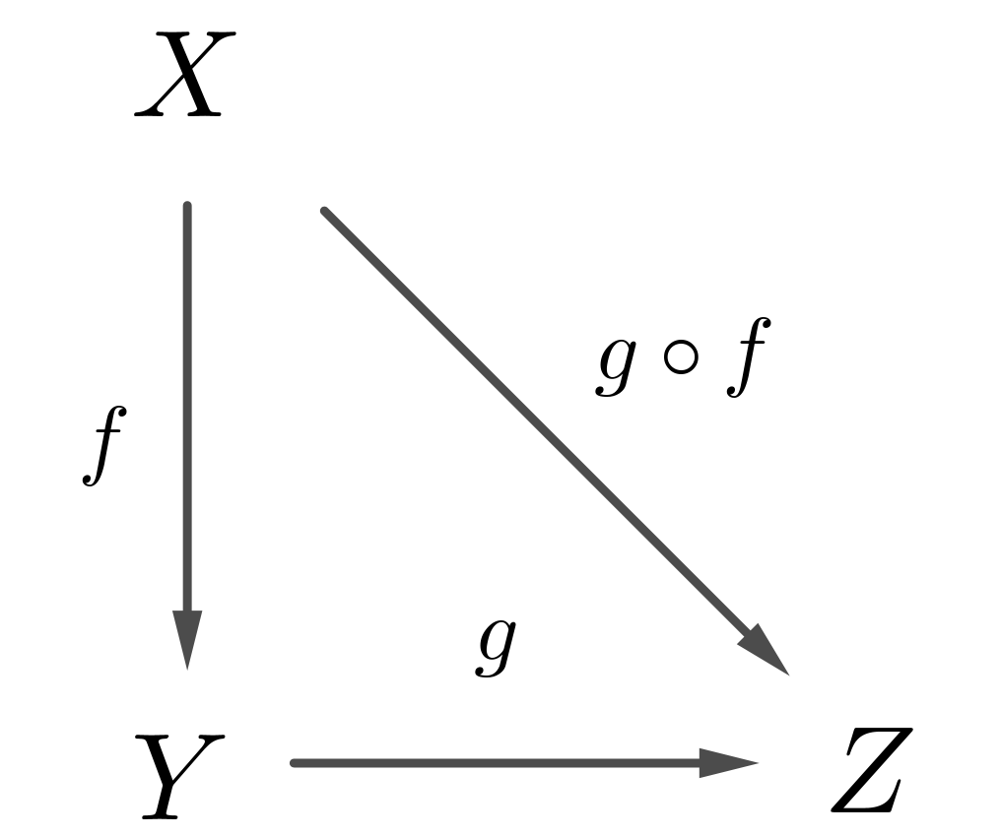
$\dem$ $\ida$ Es claro.
$\vuelta$ Si $g\circ f$ es continua, dado $U\subset Z$ abierto
$$
(g\circ f)^{-1}(U)=f^{-1}(g^{-1}(U))
$$
es abierto; de donde $g^{-1}(U)\subset Y$ es abierto y $g$ es continua.$\findem$
Como consecuencia de lo anterior se tiene la siguiente propiedad de las funciones cocientes.
Corolario (Prop. Univ. del Cociente):
Sean $f:X\ra Y$ función cociente y $g:X\ra Z$ función continua que es constante en las
preimágenes $f^{-1}(y), \forall y\in Y$. Entonces existe una única función continua $h:Y\ra Z$
tal que $h\circ f=g$
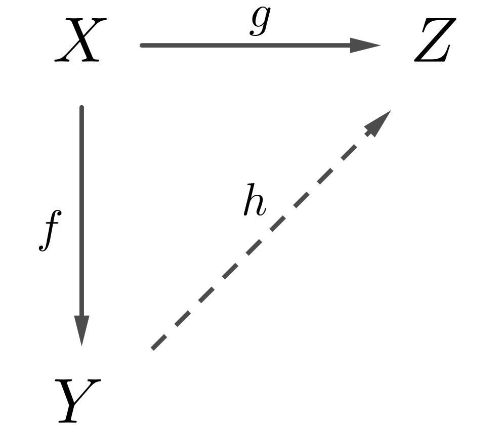
$\dem$ Como $g$ es constante en $f^{-1}(y)$ se tiene que si $f(x)=f(y)$ entonces $g(x)=g(y)$.
Equivalentemente, para $y\in Y$ el conjunto $g(f^{-1}(y))$ es unipuntual, digamos $g(f^{-1}(y))=\{ z\}$.
Definamos $h(y)=z$ y notemos que para todo $x\in X$ se tiene $(h\circ f)(x)=g(x)$. La continuidad de $h$
se sigue del teorema anterior. $\findem$
La propiedad universal anterior afirma que toda función continua $g:X\ra Z$ factoriza a
través
de una función cociente: $g=h\circ f$.
Ejemplo
Consideremos $D^n$ disco unitario y $S^n$ esfera unitaria como sigue
$$
D^n=\{\ol{x}\in \br^n\barra ||\ol{x}||^2\leq 1\},\;\; S^n=\{(\ol{x},y)\in \br^n\times \br\barra
||x||^2+y^2=1 \}
$$
para definir $f:D^n\ra S^n$ mediante
$$
f(\ol{x})=(2\ol{x}\sqrt{1-||\ol{x}||^2},\:2||\ol{x}||^2-1)
$$
Notemos que $f$ es continua y sobreyectiva. Además, dado que el dominio es compacto y el
contradominio es Hausdorff $f$ es una función cociente cerrada. Por otro lado, observemos que la
restricción
$$
\{\ol{x}\in D^n\barra ||\ol{x}|| < 1\}\lra \{(\ol{x},y)\in S^n\barra y <1\} $$
es un homeomorfismo.
Finalmente notemos que $f(\partial D^n)=(0,1)\in S^n$ por lo que $f$ envía la
frontera del disco
en un punto de la esfera.$\bt$
4.2 Detour particiones
Los ejemplos más importantes de espacios cociente surgen a partir de relaciones de equivalencia en
espacios. Por esta razón daremos un (breve) repaso a la teoría de relaciones en conjuntos.
Una relación entre dos conjuntos $X,Y$ es un subconjunto $R$ del producto cartesiano
$X\times Y$.
Dada una relación $R$, se dice que $x$ está relacionado con $y$ si $(x,y)\in R$; en
este caso se
usa la notación $xRy$ o también $x\sim y$, la cual resulta más común.
Una relación en $X$ es llamada relación de equivalencia si las siguientes propiedades
se
satisfacen para cualesquiera elementos $a,b,c\in X$:
$a\sim a$
si $a\sim b$ entonces $b\sim a$
si $a\sim b$ y $b\sim c$, entonces $a\sim c$.
Sea $\sim$ relación de equivalencia en $X$. Definimos la clase de equivalencia de $x\in
X$ como el
conjunto de aquellos elementos equivalentes a $x$ a través de la relación $\sim$; es decir,
$$
[x]:=\{y\in X \;|\; y\sim x\}
$$
Algunas observaciones:
Si existe $z\in [x]\cap [y]$, para $x\neq y\in X$, entonces $z\sim x, z\sim y$; por transitividad se
obtiene que $x\sim y$, así que $[x]=[y]$. Es decir, las clases de equivalencia son conjuntos
disjuntos.
Toda clase de equivalencia es un conjunto no vacío pues $x\in[x]$, para todo $x\in X$. Más aún, el
conjunto $X$ es unión de todas las clases de equivalencia.
Una partición de un conjunto $X$ consiste de una colección de subconjuntos de $X$ que
son
disjuntos y cuya unión es todo $X$. Notemos que por las observaciones de arriba toda relación de
equivalencia $\sim$ induce una partición a través de las clases de equivalencia.
Consideremos $\mcal{U}=\{U_i\}_{i\in I}$ una partición para el conjunto $X$ y definamos la relación
$$
x\sim y \sss \exists U_i\in \mcal{U}, \; x,y\in U_i
$$
Por la definición de partición obtenemos que $\sim$ es una relación de equivalencia; es decir, toda
partición define una relación de equivalencia.
Por lo mencionado arriba se observa que los conceptos de partición y de relación de equivalencia son
practicamente lo mismo.
Sean $X$ conjunto y $\mcal{U}$ una partición de $X$. Llamamos conjunto cociente al
conjunto cuyos
elementos son los subconjuntos de la partición $\mcal{U}$; denotamos a este conjunto como $X/\mcal{U}$ y
puede pensarse como el conjunto obtenido al "encoger" cada clase de equivalencia a un punto.
Observemos que por lo descrito arriba el conjunto $X/\mcal{U}$ puede ser llamado también el
conjunto de clases de equivalencia, para la relación de equivalencia determinada por la
partición
$\mcal{U}$.
Ejemplos
Consideremos el conjunto $X$ dado por intervalo cerrado $[0,1]$ en la recta real. Consideramos la
partición $\mcal{U}$ de $X$ dada por los subintervalos
$$
U_1=[0,1/3],\;U_2=(1/3,2/3],\;U_3=(2/3,1]
$$
En este caso el conjunto cociente consiste de tres elementos $X/\mcal{U}=\{U_1,U_2,U_3\}$ y puede ser
considerado como un espacio topológico discreto.
Definamos en los enteros $\bz$: decimos que $k,m$ son congruentes módulo $n$, lo cual se representa
como $k \equiv m \Mod{n}$, si $k-m=np$, para algún $p\in \bz$. Observemos que esto es una relación de
equivalencia y tiene $n$ clases de equivalencia:
$$
[0],[1],\ldots, [n-1]
$$
El conjunto de dichas clase es denotado por $\bz_n$ y es llamado el conjunto de
enteros módulo $n$. De hecho, al definir una operación de suma
mediante $[x]+[y]:= [x+y]$ se obtiene que $\bz_n$ es
también un grupo. $\bt$
4.3 Topología cociente
Although the quotient topology is easily defined...
it takes some time to work with it.
— Tammo tom Dieck, 2008
Sean $X$ espacio topológico y $Y$ conjunto. Dada una función sobreyectiva $f:X\ra Y$ definimos:
$$
U\subseteq Y\; \mbox{abierto}\; \sss f^{-1}(U)\subseteq X \; \mbox{abierto}
$$
Lema:
La colección $\tau=\{U\subseteq Y \barra U\;\mbox{abierto}\}$ es una topología para $Y$.
$\dem$ Basta ver que, dado que $f$ es sobreyectiva, se tiene:
La topología es llamada la topología cociente en $Y$ respecto a
$f$ y es la única topología en $Y$ que hace que $f$ sea una
función cociente y la más fina que hace a $f$ continua. Con esto además podemos definir: una
función continua y sobreyectiva $f:X\ra Y$ es función cociente si $Y$ tiene la topología cociente
Ejemplos
Tomemos $X=\br, Y=\{a,b,c\}$ y definamos
$$
f:X\ra Y,\;\;f(x)=\begin{cases}a,&x>0\\b,&x < 0\\c,&x=0 \end{cases}
$$
Observemos que la colección $$
\{\emptyset, \{a,b,c\}, \{a\},\{b\}, \{a,b\} \} $$ son los abiertos de la topología cociente
inducida por $f$.
(Topología Digital)
Tomemos $\br$ con la topología usual y definamos $f:\br\ra \bz$ mediante
$$
f(x)=\begin{cases}x,&x\in \bz\\n,&x\in (n-1,n+1),\;n\;\mbox{entero impar}\end{cases}
$$
Notemos que $f$ es la identidad en $\bz$ y $f(x)$ es el entero impar más cercano a $x$. La
topología cociente inducida por $f$ es llamada la Topología
Digital\index{topología!digital} de los enteros $\bz$ y tiene por abiertos $\{n\}$, si $n$ es
impar; para $n$ par el abierto más peque\~no que lo contiene es $\{n-1,n,n+1\}$; véase el Ejemplo
en
Capitulo 1,
sección 1.$\bt$
Existe un caso particular donde la topología cociente surge de manera frecuente: dada una relación
de equivalencia en $X$ denotemos por $X/\simi$ al conjunto de clases equivalencia. Definimos una función
mediante
$$
\pi:X\lra X/\simi,\;\;\;\;x\longmapsto [x]
$$
Es decir, la función $\pi$ envía a cada elemento $x\in X$ a su correspondiente clase de equivalencia.
Observemos que con esta función en general no es inyectiva pues al tener $x,y \in X$ tales que $x\sim
y$, con $x\neq y$, se cumple que
$$
\pi(x)=[x]=[y]=\pi(y).
$$
Más aún, todos los elementos relacionados con $x$ tienen la misma imagen que $x$; revisaremos esta
propiedad en la próximas secciones con ejemplos concretos.
Por lo que se mencionó acerca de particiones y relaciones de equivalencia podemos observar que la
función $\pi:X\lra X/\simi$ es sobreyectiva. Al equipar a $X/\simi$ de la topología cociente lo
llamamos el espacio cociente de $X$ por la relación $\simi$.
Como consecuencia directa de la Propiedad Universal de Cocientes se obtiene el siguiente resultado
Teorema:
Sean $f:X\ra Y$ función continua, $\simi$ relación de equivalencia en $X$ y $\pi:X\ra X/\simi$
función cociente. Entonces existe función continua $g:X/\simi \ra Y$ tal que $g\circ \pi=f$ $\sss$
la función $f$ es constante en clases de equivalencia.
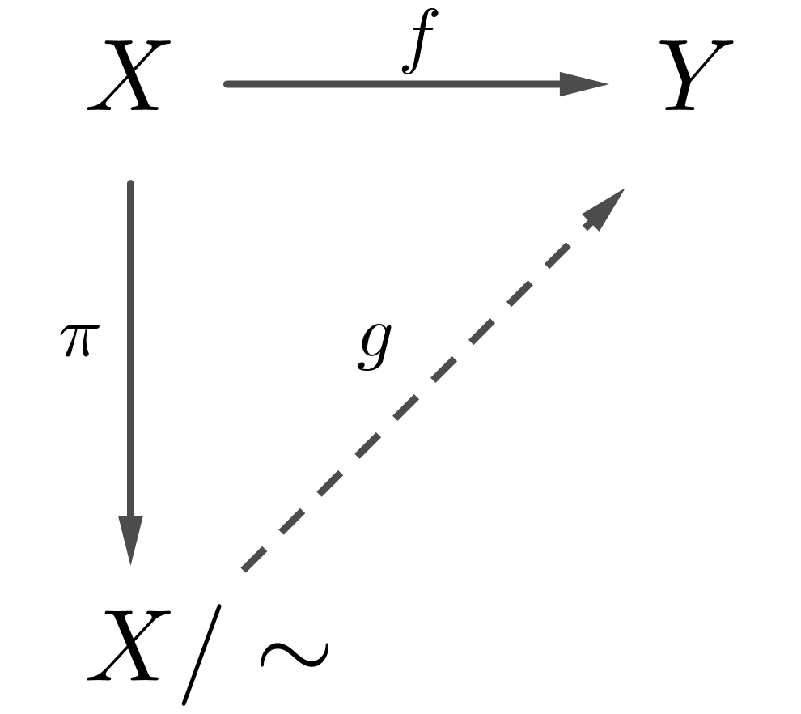
Aquí ser constante en clases de equivalencia significa que si $x\simi y$ entonces $f(x)=f(y)$.
Otra manera de establecer esta propiedad es diciendo que $f$
factoriza o pasa al cociente de
manera única a través del cociente $X/\simi$.
Ejemplo:
Sea $f:X\ra Y$ función continua y definamos
$$
x\simi_f y \sss\;\;f(x)=f(y)
$$
Por el teorema anterior existe $\tilde{f}:X/\!\!\simi_f\ra Y$ continua e inyectiva; como se mencionó
anteriormente, decimos que $f$ factoriza al cociente definiendo a $\tilde{f}$. Más aún, notemos
que $f$ es función cociente $\sss$ $\tilde{f}$ es homeomorfismo.
Este resultado se usará adelante
para identificar cocientes a través de ciertas relaciones de equivalencia.$\bt$
Revisaremos ahora la relación que hay entre topología cociente y los conceptos introducidos
previamente. Como toda función cociente es continua se sigue que
El cociente de un espacio arco-conexo es también arco-conexo; en particular se cumple para un
espacio conexo.
El cociente de un espacio compacto es también compacto
Por otro lado, si $f:X\ra Y$ es función cociente y $A\subseteq X$, entonces la función obtenida por
restricción $q:A\ra f(A)$ no necesariamente es función cociente, para que eso ocurra deben pedirse
condiciones sobre $A$ (como ser saturado abierto/cerrado) o sobre $f$ (como ser abierta/cerrada).
En general, la propiedad de ser Hausdorff no se comporta bien bajo cocientes, esto es, existen espacios
Hausdorff en los que ciertos cocientes resultan espacios no Hausdorff; véase Ejemplo (to
add). El
problema de hallar condiciones para garantizar que el cociente sea espacio Hausdorff es difícil pero
en la presencia de compacidad se simplifica considerablemente:
Teorema:
Sea $f:X\ra Y$ función cociente con $X$ compacto y Hausdorff. Entonces las siguientes condiciones
son equivalentes
$Y$ es Hausdorff
$f$ es función cociente cerrada
$K= \{(x_1,x_2)\in X\times X \barra f(x_1)=f(x_2) \}$ es cerrado.
$\dem$ $(1)\ida(3)$ Recordemos que $Y$ es Hausdorff $\sss$ $\triangle$ es cerrado y, dado que
$K=(f\times
f)^{-1}(\triangle)$ para con $f\times f:X\times X\ra Y\times Y$, el resultado se sigue.
$(3)\ida(2)$ Tomemos $A\subseteq X$ cerrado y recordemos
(Teo.
Kuratowski) que al ser $X$
compacto, las proyecciones $p_1,p_2:X\times X\ra X$ son cerradas por lo que $p_1(K), p_2(K) $ son
cerrados. Por otro lado notemos
$$
K\cap p_2^{-1}(A)=\{(x_1,x_2)\in X\times A \barra f(x_1)=f(x_2) \}
$$
y al proyectar me quedo con $x\in X,\: f(x)\in f(A)\sss x\in f^{-1}(f(A))$; de donde
$f^{-1}(f(A))=p_1(K\cap p_2^{-1}(A)) $, por lo que $f^{-1}(f(A))$ es cerrado y $f$ es función cociente
cerrada.
$(2)\ida(1)$ Consideremos $a\neq b\in Y$. Dado que $f$ es sobreyectiva, cerrada y los puntos en $X$ son
cerrados tenemos que $a,b$ son cerrados; así
$$
A=f^{-1}(a),\;\;B=f^{-1}(b)
$$
son compactos y disjuntos. Como $X$ es Hausdorff, el
Teorema de
Wallace garantiza la
existencia de abiertos $U,V$ tales que
$$
A\times B\subseteq U\times V\subseteq (X\times X)\baca \triangle,
$$
es decir, $A\subseteq U,B\subseteq V,\; U\cap V=\emptyset\sss(X\baca U)\cup (X\baca V)=X$. Finalmente,
como $f$ es cerrada,
$$
U'=Y\baca f(X\baca U),\;\;\;V'=Y\baca f(X\baca V)
$$
son vecindades abiertas y disjuntas de $a,b$. $\findem$
A continuación daremos algunos criterios para ser Hausdorff cuando el cociente se obtiene mediante una
relación de equivalencia $\sim$. La gráfica de la
relación $\sim$ como el subconjunto de $X\times X$ determinado por aquellas parejas $x\sim
y$:
$$
\Gamma_\sim=\{(x,y)\in X\times X\barra x\sim y \}
$$
Lema:
Sea $X$ Hausdorff con relación de equivalencia $\sim$. Si $X/\!\!\sim$ es Hausdorff, entonces
$\Gamma_\sim$ es subespacio cerrado.
$\dem$ Recordemos
(Lemma en
Capítulo 1, sección 6)
que $X$ es Hausdorff $\sss\;\triangle$ es cerrado. Observemos
que $\Gamma_\sim$ es la imagen inversa del subespacio diagonal de $X/\sim$ bajo la aplicación
$$
\pi\times \pi:X\times X\lra (X/\sim) \times (X/\sim)
$$
Como $X/\sim$ es Hausdorff, entonces $\Gamma_\sim$ es cerrado. $\findem$
Otro criterio en términos de los saturados de
la función cociente; véase Proposición 2.5 en
Félix & Tanré, 2010:
Lema:
Sea $X$ Hausdorff con relación de equivalencia $\sim$ tal que se cumple:
El saturado $\pi^{-1}(\pi(x))$ de $\{x\}$ es compacto en $X$, $\forall x\in X$.
El saturado de cualquier cerrado es un cerrado.
Como consecuencia del resultado anterior, se tiene una condición suficiente para que el cociente sea
Hausdorff
Corolario:
Sea $X$ Hausdorff y $A\subseteq X$ compacto. Entonces $X/A$ es Hausdorff.
El cociente $X/A$ en el resultado anterior será definido en la siguiente sección.
4.4 Colapsos e identificaciones
Mostramos a continuación algunos espacios cociente.
Ejemplos:
Tomemos $\br$ con topología euclidiana y definamos
$$
x\simi y\;\sss\;\;x=y\;\; \mbox{ó}\;\;|x|=|y|>1
$$
Notemos que hay dos tipos de clases de equivalencia:
$$
[x]=\begin{cases} \{x\},& -1\leq |x|\leq 1 \\ \{x,-x\},& |x|>1 \end{cases}
$$
De esto podemos observar que en el espacio cociente se identifican los puntos $x,-x$ para $|x|>1$ por
lo que podemos representar el cociente mediante
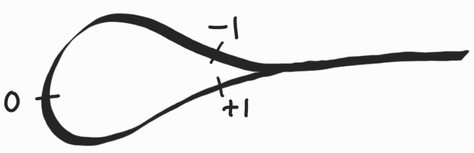
Figura 1: Resultado de tomar el cociente en la recta.
La función cociente $\pi:\br\ra \br/\simi$ cumple que
$$
\pi(1)=[1]=\{1\}\neq \{-1\}=[-1]=\pi(-1),
$$
donde $1,-1$ no pueden tener vecindades disjuntas. es decir, $\br/\simi$ es un espacio cociente no
Hausdorff, aunque $X$ lo sea.
Tomemos el subespacio de $\br^2$ dado por $X=[0,1]\times [0,1]$ y consideramos la partición
$$
\begin{cases}
\{(x, y)\},&0 < x,y<1\\ \{(x,0),\;(x,1)\},&0<x<1\\ \{(0,y),\;(1,y)\},&0<y<1\\
\{(0,0),\;(0,1),\;(1,0),\;(1,1)\}& \end{cases} $$ Las clases de equivalencia se muestran en la
imagen.
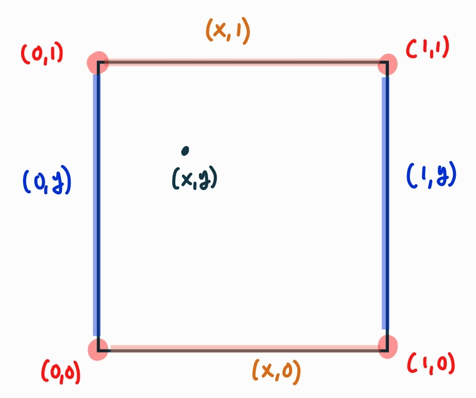
Figura 2: Subespacios de $X$ que se identifican entre si.
Sea $X=D^2$ disco unitario cerrado en $\br^2$ y definamos la relación
$$
\begin{cases}(x,y)\simi (x,y),& ||(x,y)||<1\\ (x,y)\simi (z,w),& ||(x,y)||=||(z,w)||=1\end{cases}
$$
Así, $X/\!\!\simi$ consiste de los conjuntos unipuntuales $\{(x,y)\barra ||(x,y)||<1 \}$ y del
conjunto $\partial D^2=S^1$.
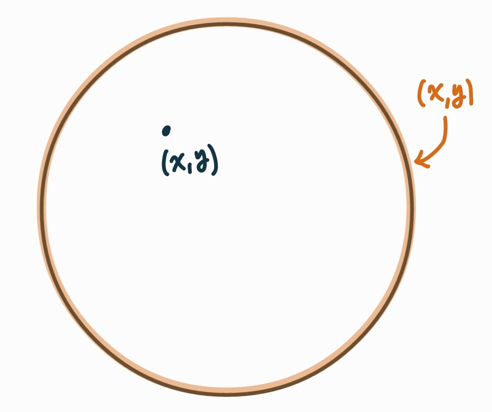
Figura 3: Disco/frontera.
El cociente $X/\simi$
es homeomorfo a $S^2$.$\bt$
4.4.1 Colapsos
Tomemos $A\subseteq X$ y definamos
$$
x\simi y \;\;\sss\;\;\;\begin{cases}x=y,&x,y\notin A\\ x,y\in A \end{cases}
$$
Observemos que $\simi$ es una relación de equivalencia y que se obtiene una partición de $X$
consistente del conjunto $A$ y los unipuntuales $\{ x\}$, para $x\notin A$. El espacio cociente por esta
relación se denota por $X/A$ y es común decir que el cociente $X/A$ se obtiene mediante el
colapso del subespacio $A$.
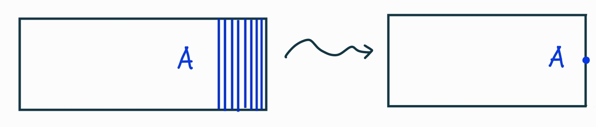
Figura 4: El subespacio $A$ y su colapso.
Ejemplo:
La función
$$
f:S^{n-1}\times [0,1]\ra D^n,\;f(x,t)=xt
$$
es continua y sobreyectiva. Como el dominio es compacto y el contradominio es Hausdorff, la función
$f$ es cerrada y por tanto función cociente. Notemos
$$
f(x)=f(y)\sss x=y\;\; \mbox{ó}\;\; x,y\in S^{n-1}\times \{0\},
$$
es decir, $f$ es constante en los puntos de $S^{n-1}\times \{0\}$. Por el Ejemplo \ref{facto} la
función anterior induce el homeomorfismo
$$
S^{n-1}\times [0,1]/S^{n-1}\times \{0\} \stac{\cong} D^n
$$
La figura de abajo muestra el homeomorfismo anterior para el caso $n=2$:
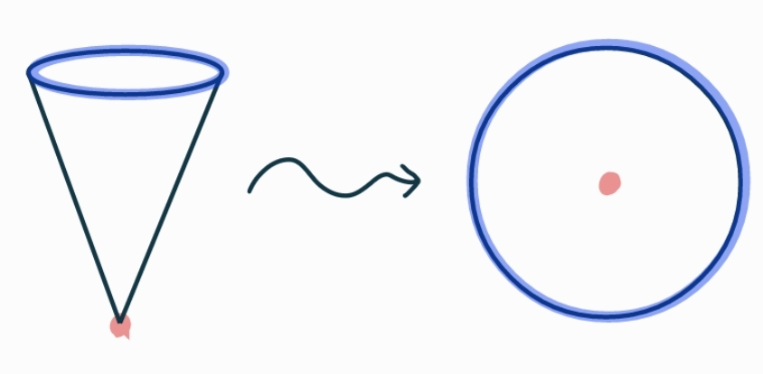
Figura 5: El cilindro $S^1\times [0,1]$ se convierte en un cono y después en un disco.
4.4.2 Identificaciones
Consideremos subespacios $A,B\subseteq X$ y $h:A\ra B$ homeomorfismo entre ellos y definimos la
siguiente relación en $X$
$$
x\simi y\;\;\sss\;\;\;\begin{cases}x=y&\mbox{ó}\\h(x)=y&\mbox{ó} \\h^{-1}(x)=y \end{cases}
$$
Es decir, la relación anterior identifica los puntos $a\in A$ con los puntos $h(a)\in B$ y viceversa.
El espacio cociente obtenido con esta relación es el resultado de identificar a $A$ con $B$ a
través del homeomorfismo $h$; equivalentemente, se dice que estamos pegando a $A$ y $B$.
Ejemplos:
Tomemos el cuadrado $X=[0,1]\times [0,1]$ y consideremos los subespacios $A,B$ dados por las paredes
laterales de $X$:
$$
A=\{0\}\times [0,1],\;B=\{1\}\times [0,1]
$$
Consideremos la identificación de $A$ y $B$ a través del homeomorfismo $h:A\ra B$:
Para $h(0,t)=(1,t)$ el cociente es un cilindro
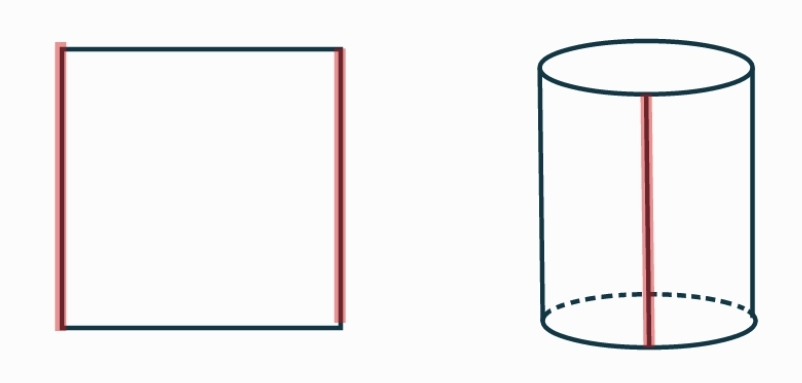
Figura 6: El cilindro $S^1\times [0,1]$ se convierte en un cono y después en un disco.
Para $h(0,t)=(1,1-t)$ el espacio cociente es la banda de Moebius.
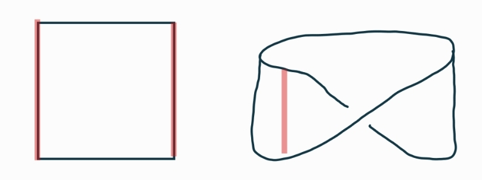
Figura 7: El cilindro $S^1\times [0,1]$ se convierte en un cono y después en un disco.
Sea $X=[0,1]\times [0,1]$ y consideremos
$$
A=\{0\}\times [0,1] \cup [0,1]\times \{0\},
$$
$$
B=\{1\}\times [0,1]\cup [0,1]\times \{1\}
$$
Definamos $h:A\ra B,\;(0,t)\mapsto (1,t), (t,0)\mapsto (t,1)$. El resultado de pegar $A,B$ a través
de $h$ consiste en pegar el lado inferior con el superior y el lado derecho con el izquierdo; el
resultado es el toro $T^2$.
(Botella de Klein)
Al igual que en el ejemplo anterior, tomemos $X=[0,1]\times [0,1]$ y consideremos
$$
A=\{0\}\times [0,1] \cup [0,1]\times \{0\},
$$
$$
B=\{1\}\times [0,1]\cup [0,1]\times \{1\}
$$
Definamos $h:A\ra B,\;(0,t)\mapsto (1,t), (t,0)\mapsto (1-t,1)$. El resultado de pegar $A,B$ a
través de $h$, es la botella de Klein.$\bt$
En esta sección hablaremos del espacio cociente que surge al considerar la interacción de un grupo con
un espacio topológico.
Recordemos que el conjunto $\topp(X)$ de homeomorfismos de un espacio $X$ forma un grupo con la
operación de composición:
$$
g,f\in \topp(X),\;\; f\circ g\in \topp(X)
$$
Observemos que dado un elemento $f\in \topp(X)$ la evaluación $f(x)$ está bien definida para cualquier
$x\in X$.
Ejemplo:
Para la recta real $\br$ consideramos la función dada por una traslación por $1$
\begin{equation}\label{tra1}
t_1:\br \to \br,\qquad t_1(x):=x+1
\end{equation}
Observemos que $t_1$ es función continua y tiene por inversa a $t_{-1}(x):=x-1$, que también es
continua; de esto obtenemos que $t_1\in \topp(\br)$.
La elección de $1$ en la función (\ref{tra1}) fue totalmente arbitraria pues es posible elegir
cualquier entero $p$ para definir
$$
t_p:\br \to \br,\qquad t_p(x):=x+p
$$
y obtener un elemento de $\topp(\br)$.$\bt$
El ejemplo anterior muestra que $\topp(\br)$ es "grande" pues se tiene una inclusión de la forma
$$
\{\ldots,t_{-2},t_{-1},t_0,t_1,t_2,\ldots\}\subseteq \topp(\br)
$$
En general, el grupo de homeomorfismos $\topp(X)$ de un espacio puede tener una cantidad grande de
elementos, por lo que resulta conveniente introducir alguna equivalencia entre ellos para dividirlo en
clases de equivalencia. Una de ellas es la homotopía, así que el estudio de $\topp(X)$ puede realizarse
a través de clases de homotopía de homeomorfismos.
Cuando se especifica un subgrupo $G\subseteq \topp(X)$ decimos que dicho grupo {\bf actúa en $X$} en
el siguiente sentido de la siguiente relación de equivalencia: $
x\sim y\:\sss\: \exists g\in G, \; y=g(x)$. Es decir, los elementos de $G$ "mueven" a los puntos de $X$.
Definimos la $G$-órbita de $x\in X$ como su clase de equivalencia bajo la relación anterior; es
decir,
$$
G_x=\{g(x)\barra g\in G \}
$$
La $G$-órbita para $A\subseteq X$ es la unión de las órbitas de sus elementos
$$
G_A=\bigcup_{x\in A}G_x
$$
El conjunto de órbitas (de elementos de $X$) forma una partición de $X$, denotada por $X/G$ y
llamado el espacio de órbitas de la acción de $G$. Tenemos entonces una función cociente
canónica
$$
\pi:X\lra X/G,\;\;x\longmapsto G_x,
$$
con $\pi^{-1}(\pi(x))=G_x$, como subconjunto de $X$. Con la topología cociente los abiertos en $X/G$
son órbitas de abiertos en $X$:
$$
U\subseteq X \;\;\longmapsto G_U=\bigcup_{x\in U} G_x
$$
Theorema:
Sean $G\subseteq \topp(X)$ y $\pi:X\ra X/G$ como arriba. Entonces $\pi$ es una función abierta; si
$G$ es finito $\pi$ es también cerrada.
$\dem$ Por definición, para un abierto $U\subseteq X$ se tiene
$$
\pi^{-1}(\pi(U))=\bigcup_{g\in G} g(U)
$$
es unión de abiertos por ser $g$ homeomorfismos; de aquí, $\pi(U)$ es abierto en $X/G$. Si $G$ es
finito y $C\subseteq X$ es cerrado, entonces $\pi^{-1}(\pi(C))=G_C$ como arriba es unión finita de
cerrados y por tanto $\pi(C)$ es cerrado.$\findem$
Como se mencionó antes, resulta importante analizar cuáles son las propiedades topológicas que se
heredan a espacios cocientes. En general, el cociente de un espacio Hausdorff no es Hausdorff:
Ejemplo:
Recordemos que $G=GL_n(\br)$ es el grupo de matrices con $\det(A)\neq 0$; equivalentemente $G$
consiste de transformaciones lineales invertibles $\br^n\to \br^n$ por lo que tenemos que $G\subset
\topp(\br^n)$. Dados dos vectores $\ol{x},\ol{y}\in \br^n$ no cero, observemos que la ecuación
$$
A\ol{x}=\ol{y}
$$
siempre tiene solución (no trivial) pues $\det(A)\neq 0$. Esto muestra que el cociente $\br^n/G$
consiste de dos clases, lo que implica que no es Hausdorff. $\bt$
Aún así se tiene el siguiente criterio para detectar cocientes Hausdorff:
Theorema:
Sea $G\subseteq \topp(X)$. El cociente $X/G$ es Hausdorff $\sss$ el subespacio
$$
K=\{(x,g(x))\in X\times X\barra x\in X,\; g\in G \}
$$
es cerrado en $X\times X$.
$\dem$ Sabemos que la función cociente $X\ra X/G$ es abierta y sobreyectiva por lo que el
producto
$$
p:X\times X\lra X/G\times X/G
$$
es también abierta y sobreyectiva; en particular, es una función cociente. Notemos que $p(x,y)\in
\triangle_{X/G}\sss x,y$ pertenecen a la misma órbita; es decir, $(x,y)\in K$ por lo que
$K=p^{-1}(\triangle_{X/G})$. Finalmente, como $p$ es función cociente, $\triangle_{X/G}$ es cerrado
$\sss$ $K$ es cerrado.$\findem$
Theorema:
Sean $G\subseteq \topp (X)$, con $X$ Hausdorff y $\pi:X\ra X/G$ la respectiva función cociente.
Supongamos que existe $A\subseteq X$ abierto tal que $\pi:A\ra X/G$ es sobreyectiva y el conjunto
$$
\{g\in G\barra g(A)\cap A\neq \emptyset \}
$$
es finito. Entonces $X/G$ es Hausdorff.
$\dem$ Hagamos $\{g_1,\ldots, g_n\}=g(A)\cap A$. Dados $p,q\in X/G$ elementos distintos escojamos
$x,y\in X$ tales que $\pi(x)=p,\pi(y)=q$; es decir, escogemos elementos en las órbitas de $p,q$. Como
$X$ es Hausdorff podemos considerar $U_i,V_i\subseteq X$ tales que
$$
x\in U_i,\;\;g_i\cdot y\in V_i,\;\;\;U_i\cap V_i=\emptyset,\;\;i=1,2,\ldots,n
$$
Tomemos los abiertos
$$
U=A\cap (\bigcap_{i=1}^n U_i),\qquad V=A\cap (\bigcap_{i=1}^n g_i^{-1}(V_i))
$$
Afirm. $\forall g\in G,\; U\cap g(V)=\emptyset$.
$\bullet\;$ Si $g(A)\cap A=\emptyset$ entonces, puesto que $U,V\subseteq A$, se sigue que $U\cap
g(V)\subseteq A\cap g(A)=\emptyset$ y la afirmación es cierta.
$\bullet\;$ Si $g=g_i$, para algún $i$, entonces del hecho de que $U\subseteq U_i$ y que $V\subseteq
g^{-1}(V_i)$ se tiene que
$$
U\cap g(V)\subseteq U_i\cap V_i=\emptyset.
$$
Finalmente, para probar que $x\in U, y\in V$ tienen vecindades disjuntas probaremos que
$$
\big(\bigcup_{g\in G}g(U) \big)\cap \big(\bigcup_{h\in G}h(V) \big)=\bigcup_{g,h\in G}\big(g(U)\cap
h(V)\big)=\emptyset
$$
Pero si $g(U)\cap h(V)\neq \emptyset$, para ciertos $g,h\in G$ entonces tedríamos que
$$
U\cap g^{-1}h(V)=g^{-1}\big(g(U)\cap h(V) \big)\neq \emptyset
$$
lo cual no puede ser por lo que se acaba de probar arriba. $\findem$
Ejemplo:
Consideremos $\topp(\br^n)$ y tomemos el subgrupo $G$ que consiste de translaciones por vectores de
entradas dadas por números enteros:
$$
g\in G,\;\;g\cdot \ol{x}=\ol{x}+\ol{a}, \;\;\ol{a}\in \bz^n
$$
Para $A=\{(x_1,\ldots,x_n)\in \br^n\barra |x_i|<1, i=1,2,\ldots, n\}$ la función cociente $A\ra
X/G$
es sobreyectiva. Además, para $\ol{a}=(a_1,\ldots,a_n)\in \bz^n$ se tiene que $A\cap
(A+\ol{a})\neq \emptyset$ si, y sólo si $\ol{a}=(a_i)$ con $|a_i|\leq 1$; es decir, $\ol{a}$ tiene
por coordenadas combinaciones de 0's, 1's y -1's. Por el resultado anterior se tiene que $\br^n/G$
es Hausdorff. $\bt $
Las condiciones del resultado anterior se satisfacen trivialmente cuando el grupo $G$ que actúa en $X$
es finito.
Corolario:
Sea $G\subset Homeo(X)$ finito para $X$ Hausdorff. Entonces $X/G$ es Hausdorff.
A continuación otro criterio para determinar si el cociente es Hausdorff.
Lema:
Sea $G\acc X$. Si $X,G$ son Hausdorff y compactos, entonces $X/G$ también es Hausdorff y compacto.
En particular, si $G$ es grupo topológico compacto y Hausdorff y $H\leq G$ es cerrado, el cociente
$G/H$ es Hausdorff y compacto.
Decimos que la acción de $G$ en $X$ es transitiva si para
cualesquiera $x,y\in X$ existe $g\in G$ tal que $g\cdot x=y$. Notemos que si la acción es transitiva,
entonces $X/G$ consiste de un único punto. Por otro lado, el grupo
estabilizador de $X$ es el subgrupo
$$
G_x=\{g\in G\barra g\cdot x=x\}
$$
La acción de $G$ se dice libre si $G_x=\{e\},\;\forall x\in X$.
Lema:
SSea $G$ grupo topológico compacto actuando en $X$ de manera transitiva, con $X$ Hausdorff. Entonces
$G/G_x\cong X,\;\forall x\in X$.ea $G\acc X$. Si $X,G$ son Hausdorff y compactos, entonces $X/G$
también es Hausdorff y compacto.
$\dem$ Para $x\in X$ fijo consideremos la función
$$
\varphi_x:G\lra X,\;\; g\mapsto g\cdot x
$$
Notemos que $g,g'\in G$ son equivalentes $\sss\; g^{-1}g'\in G_x$; es decir, $(g^{-1}g')\cdot x=x$, de
donde $g\cdot x=g'\cdot x$. Con esto $\varphi$ pasa al cociente por $G_x$:
$$
\ol{\varphi}_x:G/Stab(x)\lra X
$$
Notemos que $\ol{\varphi}_x$ es inyectiva (por construcción) y como la acción es transitiva, es
también sobreyectiva. Como $G/Stab(x)$ es compacto y $X$ Hausdorff, $\ol{\varphi}_x$ es homeomorfismo
(Corolario \ref{biyeh}). $\findem$
Ejemplos:
Recordemos que $O_n(\br)\acc S^{n-1}$ mediante multiplicación matricial, y lo hace, además, de
manera transitiva pues para $\ol{u}\in S^{n-1}$ cualquiera podemos hallar una base ortonormal
$\{\ol{u}_1,\ol{u}_2,\ldots,\ol{u}_n=\ol{u}\}$ cuyos vectores forman las columnas de una matriz
ortogonal $A\in O_n(\br)$ tal que $Ae_n=\ol{u}$.
Por otro lado, notemos que si $\ol{v}=e_n\in S^{n-1}$ es un vector de la base canónica, entonces
$Ae_n=e_n\sss$ la última columna de $A$ es precisamente $e_n$ y el resto de las columnas de $A$ son
ortogonales a $e_n$. Dado que las columnas de $A$ forman un conjunto ortonormal de vectores, cada una
de las primeras $(n-1)$ columnas de $A$ tienen la forma
$$
\left[\begin{array}{c} a_{1_k}\\a_{2k}\\\vdots\\a_{n-1k}\\0\end{array}\right]
$$
donde la matriz
$$
\left[\begin{array}{cccc}a_{11}&a_{12}&\cdots&a_{1n-1}
\\a_{21}&a_{22}&\cdots&a_{2n-1}\\\cdots&\cdots&\cdots&\vdots\\a_{n-11}&a_{n-12}&\cdots&a_{n-1n-1}
\end{array} \right]
$$
es ortogonal y por lo tanto pertenece a $O_{n-1}(\br)$; de aqui se tiene que $Stab(e_n)=O_{n-1}(\br)$.
Haciendo la identificación
$$
O(n-1)\ni A\longmapsto \left(\begin{array}{cc}A&0\\0&1\end{array} \right)\in O(n)
$$
se tiene que $Stab(e_n)=O_{n-1}(\br)\subset O_n(\br)$. Por la proposición anterior se tiene
$$
O_n(\br)/Stab(e_n)=O_n(\br)/O_{n-1}(\br)\cong S^{n-1}
$$
y la función cociente se identifica con
$O(n)\ra S^{n-1}$ que envia a cada matriz $A$ a su primer columna. Nota. Para el caso general se considera $\tilde{x}=(1/|x|)\ol{x}$ y se nota que
$Stab(\tilde{x})=Stab(\ol{x})$.
En el ejemplo anterior pudimos haber considerado $SO_{n-1}(\br)\acc S^{n-1}$ para obtener
$$
SO_n(\br)/SO_{n-1}(\br)\cong S^{n-1},
$$
también sus análogos complejos:
$$
O_n(\bc)/O_{n-1}(\bc)\cong S^{n-1},
$$
y cuaterniónicos
$$
O_n(\mbox{H})/O_{n-1}(\mbox{H})\cong S^{4n-1}.\;\blacktriangleleft
$$
 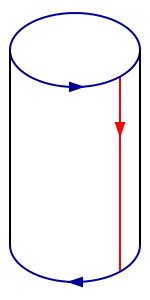
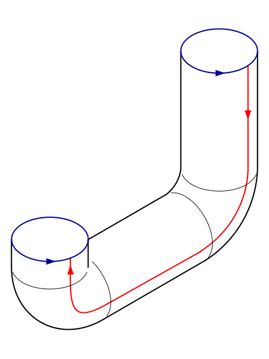
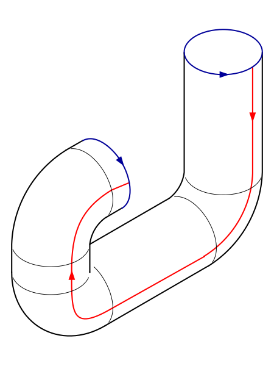
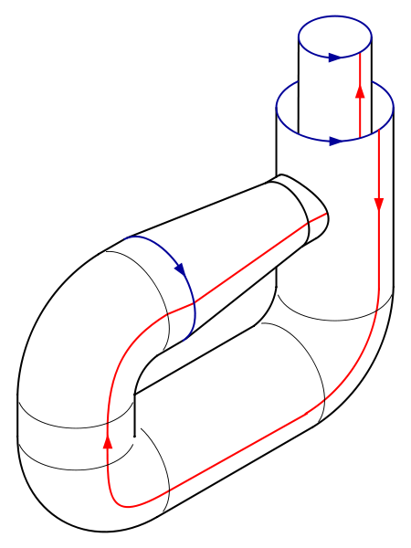
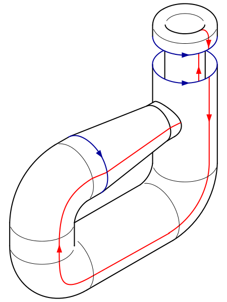
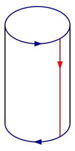
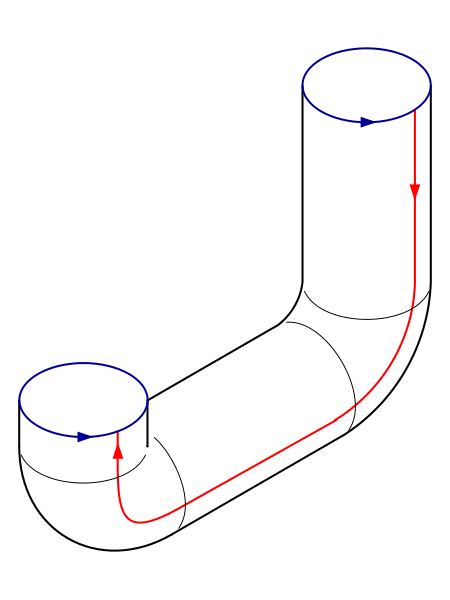
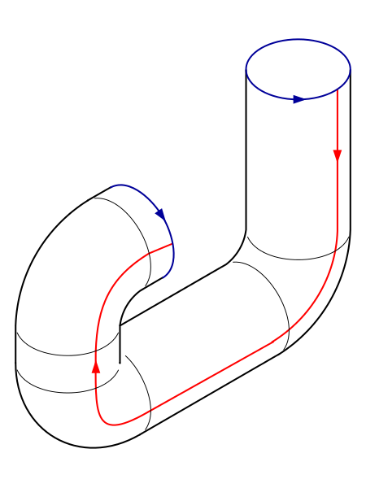
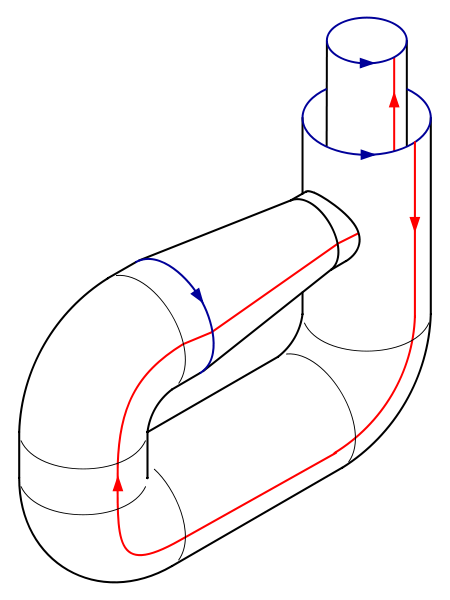
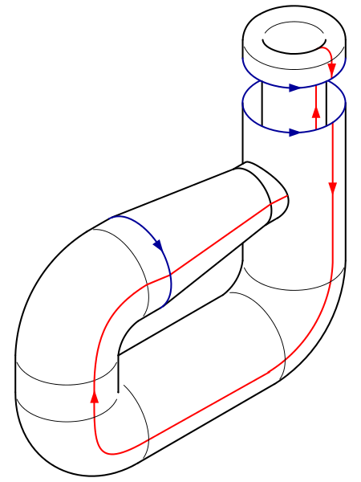